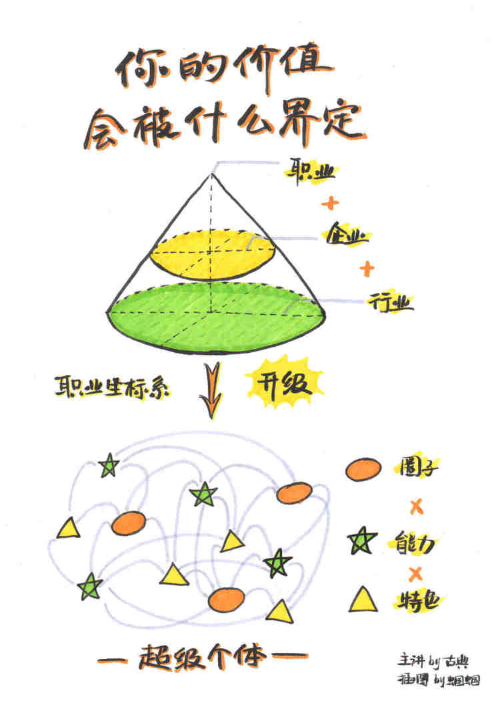

1. 性能测试应该怎么做？
很多做性能测试的同学, 都只是简单的学会了性能测试工具的用法, 但对于性能测试的目的, 各个指标的含义都不清楚, 耗子哥的文章可以参考下.
一般来说，性能测试要统一考虑这么几个因素：Thoughput吞吐量，Latency响应时间，资源利用（CPU/MEM/IO/Bandwidth…），成功率，系统稳定性。
一，你得定义一个系统的响应时间latency，建议是TP99，以及成功率。比如路透的定义：99.9%的响应时间必需在1ms之内，平均响应时间在1ms以内，100%的请求成功。
二，在这个响应时间的限制下，找到最高的吞吐量。测试用的数据，需要有大中小各种尺寸的数据，并可以混合。最好使用生产线上的测试数据。
三，在这个吞吐量做Soak Test，比如：使用第二步测试得到的吞吐量连续7天的不间断的压测系统。然后收集CPU，内存，硬盘/网络IO，等指标，查看系统是否稳定，比如，CPU是平稳的，内存使用也是平稳的。那么，这个值就是系统的性能
四，找到系统的极限值。比如：在成功率100%的情况下（不考虑响应时间的长短），系统能坚持10分钟的吞吐量。
五，做Burst Test。用第二步得到的吞吐量执行5分钟，然后在第四步得到的极限值执行1分钟，再回到第二步的吞吐量执行5钟，再到第四步的权限值执行1分钟，如此往复个一段时间，比如2天。收集系统数据：CPU、内存、硬盘/网络IO等，观察他们的曲线，以及相应的响应时间，确保系统是稳定的。
六、低吞吐量和网络小包的测试。有时候，在低吞吐量的时候，可能会导致latency上升，比如TCP_NODELAY的参数没有开启会导致latency上升（详见TCP的那些事），而网络小包会导致带宽用不满也会导致性能上不去，所以，性能测试还需要根据实际情况有选择的测试一下这两咱场景。
是不是很繁锁？是的，只因为，这是工程，工程是一门科学，科学是严谨的。
2. 鸡汤: 商科背景， 5 周完成 deeplearning.ai 课程的过程、心得与总结
5 周的时间（这个时间并不是全职完成课程，而是完成笔者大学的课程和作业的闲暇时间）
干了这碗鸡汤吧~
3. 工具: fkill, 优雅的杀进程
跨平台, 优雅的杀进程工具~
4. 超级个体1-1: 你的身价, 被什么决定?
原文链接 (需要通过微信客户端打开链接)
